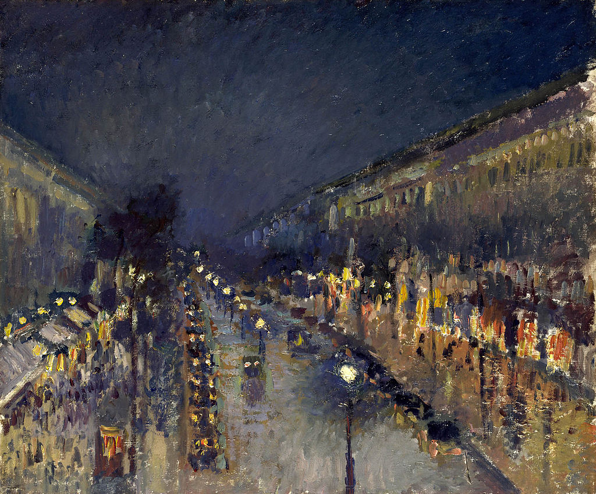

<head>
<meta charset="UTF-8" />
<meta name="keywords" content="drawing, painting" />
<meta name="description" content="drawings by Sunjy" />
<title>Sunjy</title>
<link rel="shortcut icon" type="image/x-icon" href="../../mImages/mCommon/favicon.ico" media="screen" />
<link rel="stylesheet" type="text/css" href="../../mCsses/mCommon/mCssA.css" />
<link rel="stylesheet" type="text/css" href="../../mCsses/mCommon/mCssB.css" />
<link rel="stylesheet" type="text/css" href="../../mCsses/mCommon/mCssC.css" />
<link rel="stylesheet" type="text/css" href="../../mCsses/mCommon/mCssD.css" />
<link rel="stylesheet" type="text/css" href="../../mCsses/mContent/mCssA.css" />
<link rel="stylesheet" type="text/css" href="../../mCsses/mContent/mCssB.css" />
<link rel="stylesheet" type="text/css" href="../../mCsses/mContent/mCssC.css" />
<link rel="stylesheet" type="text/css" href="../../mCsses/mContent/mCssD.css" />
</head>
<script type="text/javascript" src="../../mScripts/mContent/mContentAA.js" /></script>
<script type="text/javascript" src="../../mScripts/mContent/mContentAB.js" /></script>
<script type="text/javascript" src="../../mScripts/mContent/mContentAC.js" /></script>
<script type="text/javascript" src="../../mScripts/mContent/mContentAD.js" /></script>
<script type="text/javascript"></script> 
<script type="text/javascript">
document.write('<div class="mImgAbsolute"></div>');
/*
document.write('<p class="mFontSizeBColor" />From a white paper...</p>');
document.write('<table class="center"><tr><td>');
document.write('');
document.write('</td></tr></table>');
*/
</script>


<script type="text/javascript">
document.write('<p class="mFontSizeBColor" />Boulevard Montmartre at Night</p>');
document.write('<p class="mFontSizeSColor" />“Boulevard Montmartre at Night” by Camille Pissarro shows the busy Parisian boulevard at night, wet after a downpour.<br><br>This work gave Pissarro the opportunity to study the effect of the new electric street lamps, aligned in the middle of the street, and the orange glow of the gas lights in the windows.<br><br>Pissarro tried to represent the different effects of the artificial lights in different colors, both pale and bluish and warm and intense.<br><br>Abstract vertical shapes represent the crowds flowing under the trees and past the shops. A series of carriages lined one side of the road, with the lights on, as they wait for the exit of the show’s guests at the Moulin Rouge, located around the corner.<br><br>The dark sky is misty, and the clouds hang in the air. However, stars in the upper part of the sky, shown as small sketches of white, indicating that the clouds will pass soon.<br><br>Pissarro produced a series of this same scene and view in different climatic conditions and at different times of the day.<br><br>He was staying at the Grand Hôtel de Russie, and he painted this perspective from his window resulting in a series of pictures from the top of Boulevard Montmartre. This painting is the only one in the series depicting a night view.<br></p>');
document.write('<table class="center" /><tr><td>');
document.write('<br>This work gave Pissarro the opportunity to study the effect of the new electric street lamps, aligned in the middle of the street, and the orange glow of the gas lights in the windows.<br><br>Pissarro tried to represent the different effects of the artificial lights in different colors, both pale and bluish and warm and intense.<br><br>Abstract vertical shapes represent the crowds flowing under the trees and past the shops. A series of carriages lined one side of the road, with the lights on, as they wait for the exit of the show’s guests at the Moulin Rouge, located around the corner.<br><br>The dark sky is misty, and the clouds hang in the air. However, stars in the upper part of the sky, shown as small sketches of white, indicating that the clouds will pass soon.<br><br>Pissarro produced a series of this same scene and view in different climatic conditions and at different times of the day.<br><br>He was staying at the Grand Hôtel de Russie, and he painted this perspective from his window resulting in a series of pictures from the top of Boulevard Montmartre. This painting is the only one in the series depicting a night view.<br>" />');
document.write('</td></tr></table>');
</script>


